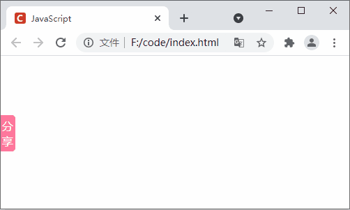
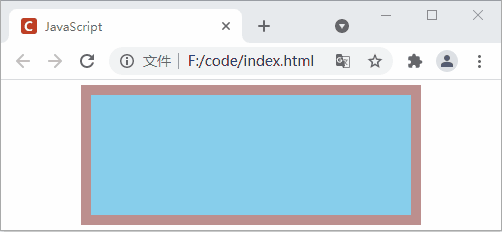

首页 > JavaScript
JS动画效果的实现（附带示例）
在学习 CSS 时我们知道，通过 CSS 可以实现简单的动画效果，但对于比较复杂的动画，使用 CSS 实现起来就会比较麻烦。除了可以使用 CSS 来实现外，也可以使用 JavaScript 来实现。JavaScript 动画主要是通过修改元素样式来实现的，能够实现许多 CSS 动画所不能实现的效果，例如暂停、回放等。
与 CSS 动画相比，JavaScript 动画具有以下特点：
JavaScript 主要通过代码修改 DOM 元素来实现动画的，并且可以配合定时器来实现循环播放，示例代码如下：
与 CSS 动画相比，JavaScript 动画具有以下特点：
- JavaScript 动画控制能力更强，可以在动画播放过程中对动画进行控制，例如开始、暂停、回放、终止、取消等；
- JavaScript 动画的效果比 CSS 动画更丰富，比如曲线运动，冲击闪烁，视差滚动等效果，只有 JavaScript 动画才能完成；
- CSS 动画有兼容性问题，而 JavaScript 大多时候没有兼容性问题。
JavaScript 主要通过代码修改 DOM 元素来实现动画的，并且可以配合定时器来实现循环播放，示例代码如下：
<!DOCTYPE html>
<html lang="en">
<head>
<meta charset="UTF-8">
<title>JavaScript</title>
<style>
*{
margin: 0;
padding: 0;
}
#box {
width: 200px;
height: 200px;
margin-top: 10px;
background: rgb(43, 221, 255);
position: relative;
left: -200px;
top: 0;
}
#box span {
width: 20px;
background: rgb(255, 119, 157);
position: absolute;
left: 200px;
top: 75px;
color: #fff;
text-align: center;
cursor: pointer;
padding: 5px 1px 5px 0;
border-radius: 0 5px 5px 0;
}
#box span:hover {
background: rgb(255, 84, 137);
}
</style>
</head>
<body>
<div id="box">
<span id="share">分享</span>
</div>
<script>
window.onload = function () {
//动画
var div = document.getElementById("box");
var timer = null;
div.onmouseover = function () {
startMove(0);
};
div.onmouseout = function () {
startMove(-200);
};
function startMove(targetPosition) {
clearInterval(timer);
var speed = 0;
if (targetPosition < 0) {
speed = -10;
} else {
speed = 10;
}
timer = setInterval(function () {
if (div.offsetLeft == targetPosition) {
clearInterval(timer);
} else {
div.style.left = div.offsetLeft + speed + 'px';
}
}, 17);
}
};
</script>
</body>
</html>
运行结果如下：

图1：JavaScript 动画效果
图1：JavaScript 动画效果
提示：如今，大多数显示器的刷新率为 60HZ，为了实现更加平滑的动画效果，使用定时器的最佳循环间隔约为 17ms。
下面再通过一个示例来演示如何创建 JavaScript 动画，示例代码如下：
<!DOCTYPE html>
<html lang="en">
<head>
<meta charset="UTF-8">
<title>JavaScript</title>
<style type="text/css">
* {
margin: 0 auto;
padding: 0;
}
ul {
list-style: none;
}
#view {
position: relative;
width: 320px;
height: 120px;
border: 10px solid #bc8f8f;
overflow: hidden;
margin-top: 5px;
}
#img_list {
position: absolute;
width: 960px;
}
#img_list li {
float: left;
width: 320px;
height: 120px;
}
</style>
</head>
<body>
<div id="view">
<ul id="img_list">
<li style="background-color: #87ceeb;"></li>
<li style="background-color: #ff69b4;"></li>
<li style="background-color: #98fb98;"></li>
</ul>
</div>
<script type="text/javascript">
var img_list = document.getElementById('img_list');
setInterval(function() {
for (var i = 0; i <= 100; i++) {
(function(pos) {
setTimeout(function() {
img_list.style.left = - (pos / 100) * 320 + 'px';
}, (pos + 1) * 10)
})(i)
}
var current = img_list.children[0];
setTimeout(function() {
img_list.appendChild(current);
img_list.style.left = '0px';
}, 1100);
}, 2000);
</script>
</body>
</html>
运行结果如下：

图2：JavaScript动画效果
图2：JavaScript动画效果
关注公众号「站长严长生」，在手机上阅读所有教程，随时随地都能学习。内含一款搜索神器，免费下载全网书籍和视频。

微信扫码关注公众号